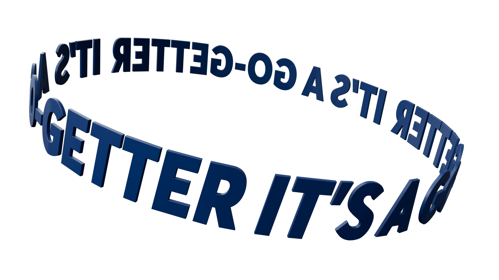
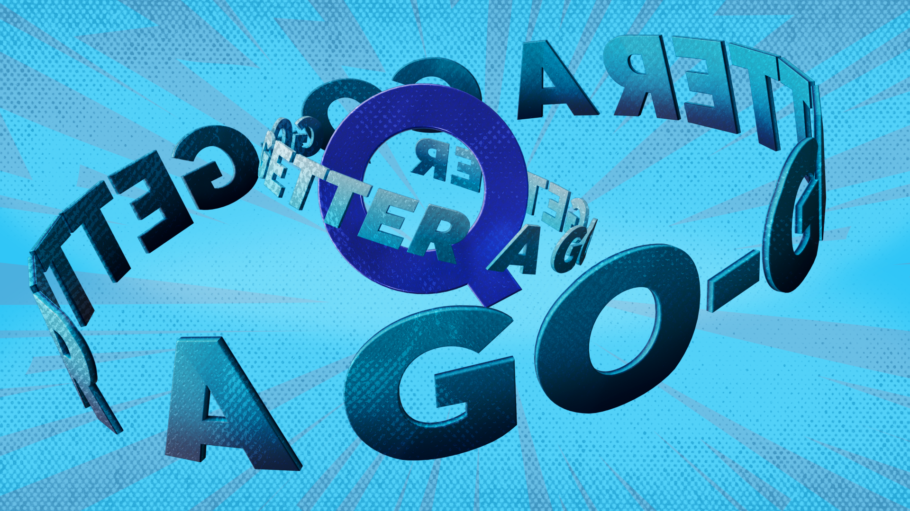
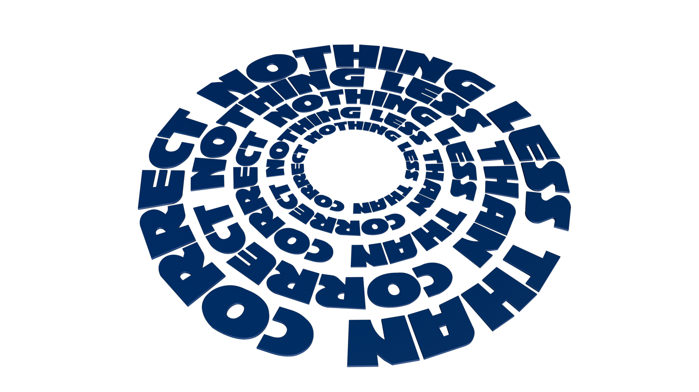
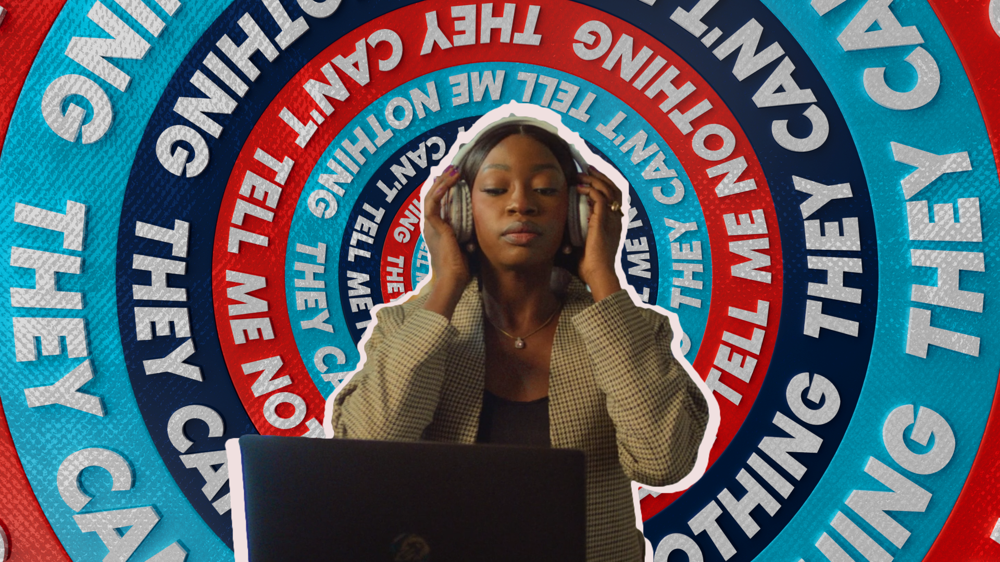

"Run It" was a lyric-style animated video for a campaign track produced for Quickteller. I was given the storyboard and animated the video in full — bold kinetic type and simple character motion, timed tight to the track's rhythm so the words themselves become part of the choreography.
Two of the scenes I pushed further than flat 2D could take them — modeling and animating them fully in 3D in Cinema 4D with Redshift, then bringing that work into After Effects and treating it to read as 2D, so those moments carry a depth the rest of the video doesn't, without breaking the flat, graphic feel of the video as a whole.
Two scenes in the video started as full 3D builds — modeled, lit, and animated in Cinema 4D and Redshift before being composited and treated in After Effects to sit seamlessly inside the flat 2D world of the rest of the video. Raw 3D build next to the final treated look, for both scenes.



